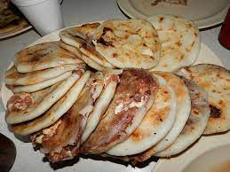

Pupusas

Description:
Pupusas are a traditional dish from El Salvador and are similar to a corn pancake with bean and cheese or meat filling. They are similar to a flatbread or pancake that is made with corn flour (masa) and can be filled with a variety of different savory fillings, like cheese, beans, beef, pork or veggies.
Ingredients
- 3 tablespoons olive oil, divided
- 2 cups masa harina
- 1/2 teaspoon kosher salt
- 1 1/2 cups warm water
- 5 ounces whole milk mozzarella cheese, shredded
Steps:
- Combine 1 tablespoon of the olive oil and 1 cup warm water in a small bowl. (You'll dip your hands in this mixture to keep the pupusa dough from sticking to your hands as you form the cakes.)
- Line a medium tray with parchment paper.
- Whisk together masa harina and kosher salt in a medium bowl. Slowly add warm water, stirring constantly, until all of the water is incorporated and dough is moist and pliable. (Start with 1 ½ cups warm water and add more as needed to reach your desired consistency.)
- Dip your hands in oil and warm water mixture to moisten your fingers and palms. Scoop out about ⅛ of the dough, a little larger than a golf ball. With your hands, roll into a ball then gently press back and forth between your palms, shaping the dough into a disc, 3 to 4-inches wide. Add a large pinch of shredded cheese to the center of the disc and gently press the sides up all the way around to seal. Use your palms to press the ball back into a disc about ½-inch thick and place on prepared tray. Repeat with remaining dough.
- Heat remaining oil in a large non-stick skillet or griddle over medium-high heat. Cook pupusas until cooked through and lightly browned, 5 to 6 minutes per side. Serve hot with Curtido and desired toppings.